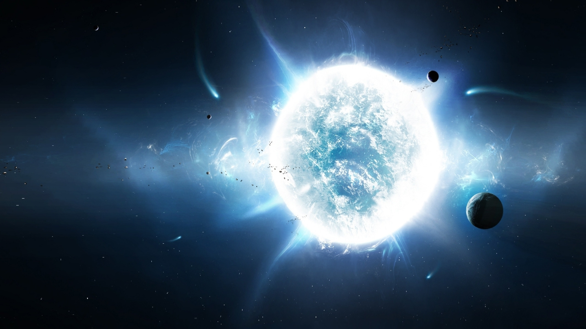
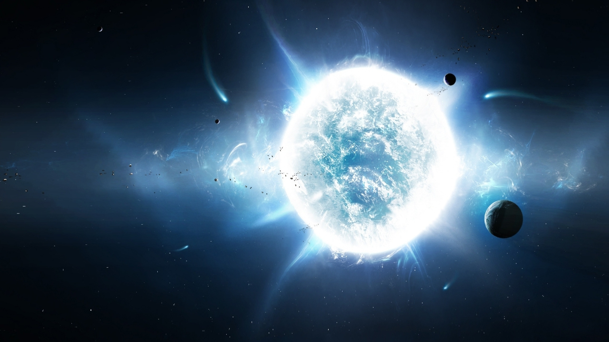

O stea este în general un anumit tip de corpuri cerești, masiv și strălucitor, deseori de formă aproximativ sferică, alcătuit din plasmă în oarecare echilibru hidrostatic, și care a produs în trecut sau încă mai produce și azi energie pe baza reacțiilor de fuziune atomică din interiorul său Stelele și praful cosmic din jurul lor alcătuiesc o nebuloasă precum în imaginea din stânga, cea din dreapta reprezentând o astfel de stea și anume Sirius B.Stelele „împodobesc” cerul nocturn. Pentru un observator terestru ele apar ca puncte de diverse culori, cu un diametru aparent egal dar cu fluctuații de luminozitate. Ochiul uman distinge pe cerul nocturn până la circa 6.000 de stele. Distanța până la stele este măsurată cu ajutorul paralaxei stelare, iar unghiul rezultat este de ordinul sutelor de miimi dintr-o secundă de arc. Stelele sunt defapt cele mai mari corpuri cerești compuse după găurile negre, marimile lor remarcabile putând fi observate și în videoul de mai jos